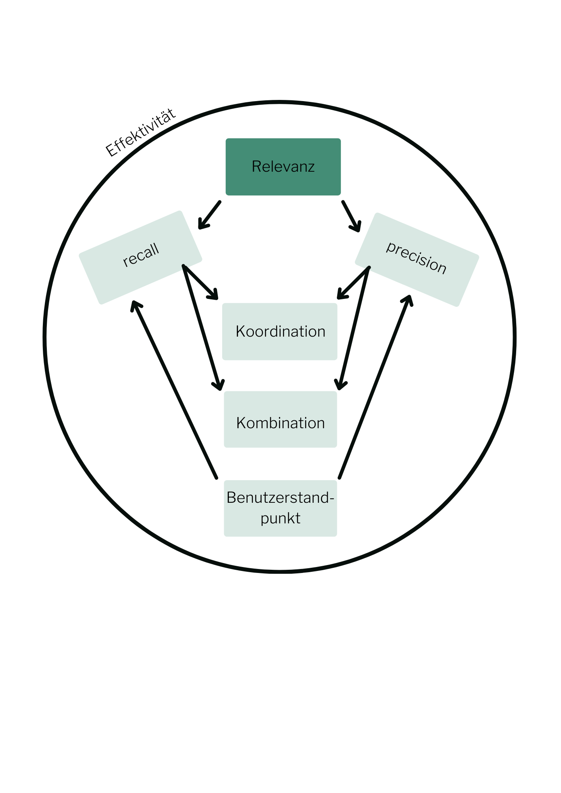

Sonderfälle bei der Berechnung
Es können Fälle auftreten, bei denen bei der Berechnung von recall oder precision der Nenner zu 0 wird. Da Rechnen hier unmöglich ist, muss man sich überlegen, welche Werte sinnvoller Weise festgelegt werden könnten.
Man kann die Fälle 'Nullantwort' und 'Leere Antwortmenge' unterscheiden:
Nullantwort
Bei einer Nullantwort werden keine relevanten Dokumente geliefert (aber nicht-relevante!).
Es werden folgende Fälle unterschieden:
Negative Nullantwort:
a=0, b>0, c>0
Es werden keine relevanten Dokumente geliefert, obwohl es welche gäbe.
In diesem Fall wird nur der Zähler zu 0, und die Maße lassen sich berechnen.
Werte: r=0, p=0
Positive Nullantwort:
a=0, b>0, c=0
Es werden keine relevanten Dokumente geliefert, wobei es auch keine gibt.
Hier wird der Nenner bei der recall-Berechnung zu 0. Nachdem es ohnehin keine relevanten Dokumente gibt und das System sein Bestes getan hat, kann man r=1 festlegen. Die precision kann entweder berechnet werden (p=0), oder man vereinbart - wenn der recall das wichtigere Maß ist - dass sich die precision nach dem recall richtet, und vergibt für p ebenfalls 1.
Werte: r=1, p=1 bzw. p=0
Leere Antwortmenge
In einer Leeren Antwortmenge befinden sich dagegen gar keine Dokumente (weder relevante noch nicht-relevante).
Es werden folgende Fälle unterschieden:
Leere Antwortmenge mit relevanten Dokumenten:
a=0, b=0, c>0
Es werden überhaupt keine Dokumente geliefert, obwohl es relevante gäbe.
Hier wird der Nenner bei der precision zu 0. Für den recall lässt sich r=0 berechnen. Ist der recall der wichtigere Wert, richtet man sich mit dem Wert für die precision nach diesem und setzt dabei p=0. Sieht man davon ab, könnte man p auch auf 1 setzen, da das System keinen Ballast liefert.
Werte: r=0, p=0/p=1
Leere Antwortmenge ohne relevante Dokumente:
a=0, b=0, c=0
Es werden keine Dokumente geliefert (es gibt ohnehin keine relevanten).
Hier wird der Nenner bei recall und precision zu 0. Nachdem das System beim Auffinden relevanter Dokumente sein Bestes getan hat und auch keinen Ballast liefert, vergibt man die bestmöglichen Werte
Werte: r=1, p=1
